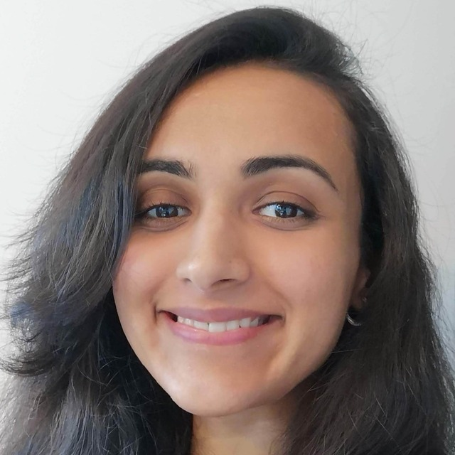
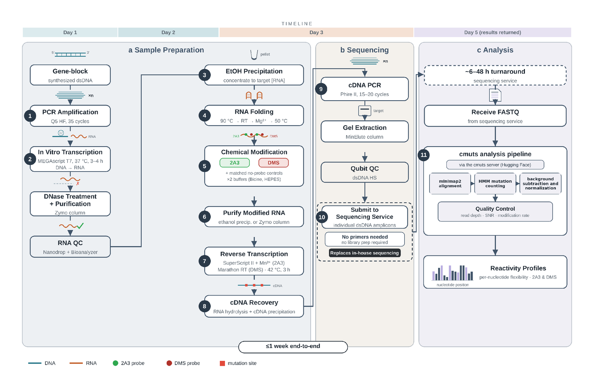
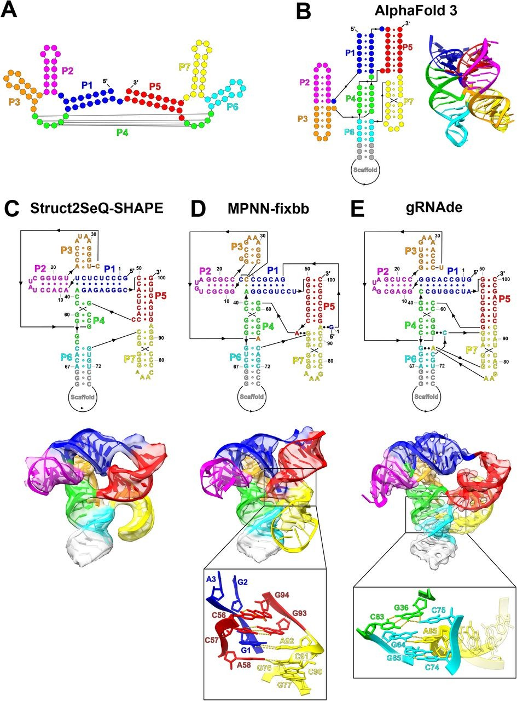
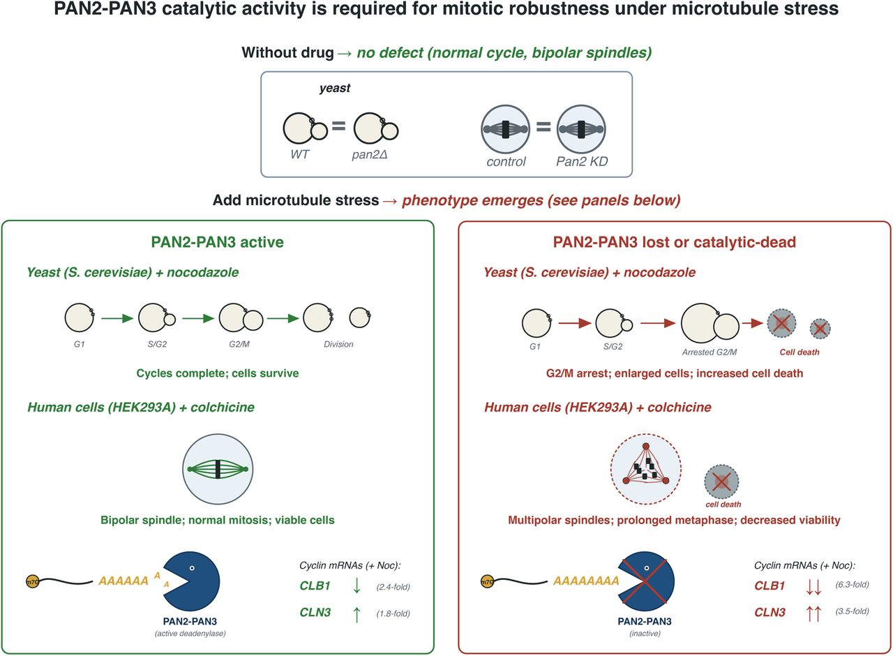
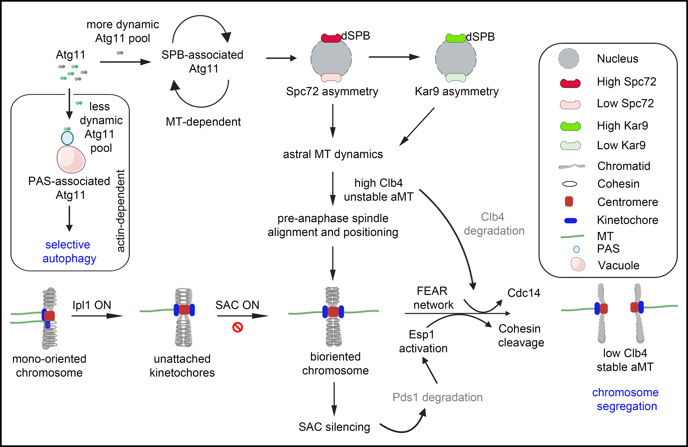

Postdoctoral Researcher · Das Lab, Stanford University
I build wet-lab methods that generate faster, cleaner, higher-throughput data for AI models, use that data to test what the models predict, and hand it back to the teams training them, so those models can engineer the biomolecules and therapeutics of the future.
I'm a postdoc with Rhiju Das in the Department of Biochemistry. I invented FAST-MaP, a chemical-mapping method that takes an RNA from DNA template to per-nucleotide structure in under a week with no sequencing infrastructure, and I use readouts like it as ground truth for models that design and predict RNA.
Before Stanford I did my PhD at the University of British Columbia on how cells control mRNA turnover under mitotic stress, and my Masters at JNCASR in Bangalore on chromosome segregation. The through-line is the same: build the measurement, then use it to test what everyone assumes.
Presented FAST-MaP at the Stanford Biochemistry Conference in Santa Cruz.
Presented FAST-MaP at the Stanford RNA Medicine Symposium.
FAST-MaP is on bioRxiv, and under review as an invited protocol.
Launched mRNA Switch Controls, an Eterna crowdsourcing lab for designing self-regulating mRNAs. 16 player designs are now selected for synthesis.
De novo design of RNA pseudoknots with deep learning is published on the cover of Science.
FAST-MaP shared with AI@HHMI collaborators at Janelia, who adopted primer-less sequencing for their initial RNA structure-probing pilots.
Received the mRNA Research Advancement Award from CELLSCRIPT.

Reading RNA structure usually means an in-house sequencing core and custom bioinformatics. FAST-MaP removes both. A DNA template goes to per-nucleotide reactivity in under a week, on commercial gene synthesis and sequencing, with analysis on a public web server. A lab anywhere can ask a quantitative structure question; collaborators at AI@HHMI adopted it for their initial structure-probing pilots.

Generative models propose RNA structures faster than anyone can check them, and designed sequences have no evolutionary relatives to validate against. Chemical-mapping readouts produced by my method told the computational team which designs actually folded, and guided the rounds that followed.
Today's therapeutic mRNA is mostly a simple on switch. I designed and launched mRNA Switch Controls on Eterna to turn one working construct into an open design challenge: players build 50-nt 3′ elements that fold back over the start codon of a NanoLuc reporter, silencing it or switching it on. 16 player designs have been selected for synthesis and experimental testing.
I designed mRNA constructs in which an engineered long-range interaction within the transcript represses cap-dependent translation roughly 8–9-fold, while a length- and composition-matched control represses only about 1.5-fold. The effect is sequence-specific and tunable by design. No published translation-efficiency model anticipates it, which makes it a clean case of a blind spot you can only find at the bench.

My PhD work: a genome-wide screen across ~4,800 yeast strains showed the PAN2–PAN3 deadenylase is selectively required for mitotic robustness under microtubule stress. A catalytically dead mutant expressed at wild-type levels failed to rescue, pinning the requirement on enzymatic activity rather than presence. The role holds from yeast to human cells.
Verma, J., He, Z., Brown, J. A. R., Dean, P., Young, B. P., Flibotte, S., Howe, L. J., Maxwell, C. D., Roskelley, C. D., and Loewen, C. J. R.
PAN2–PAN3 deadenylase activity is selectively required for mitotic robustness under microtubule stress
Under review, 2026

Reza, M. H., Aggarwal, R.*, Verma, J.*, Podh, N. K., Chowdhury, R., Mehta, G., Manjithaya, R., and Sanyal, K.
Atg11 is required for high-fidelity chromosome segregation
PLOS Biology 23, e3003069 · *equal contribution
Primer-less RNA chemical-mapping pipeline with a public web-based analysis server. No in-house sequencing infrastructure required. Stanford OTL invention disclosure under review.
Mutational-profiling pipeline scaling RNA structure profiling beyond the transcriptome, built by H. M. Blair. I generated the chemical-probing data used to validate it. Web server · v2.0.0 release
I'm interested in work where experiments and models actually close the loop. If that's what you're building, write to me: jigyasav@stanford.edu
Department of Biochemistry, Beckman Center
Stanford University School of Medicine
279 Campus Drive, Stanford, CA 94305